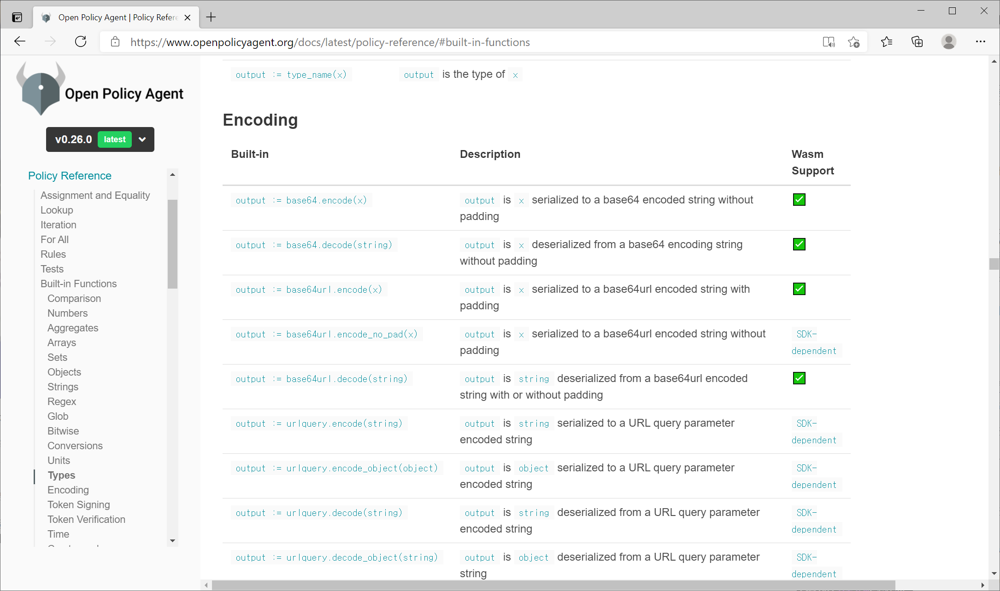

Chap 11. OPA and Web Assembly
Contents
- Overview of the Web Assembly.
- OPA's Utilization and Advantages of Web Assembly
- OPA Web Assembly SDK for the node.js
- OPA Web Assembly SDK for Java and other environments.
Chapter 11 describes how to compile and implement OPA policies with a web assembly. In particular, it will be very interesting to implement OPA policies locally by linking web assembly runtime with a library without a separate OPA web server in node.js and Java programs. Recently, OPA development has been centered on areas related to web assemblies, and the reasons, current constraints, and future prospects are also described.
Utilization of Web Assembly in OPA
Web Assembly Overview
The Web Assembly (or WASM) is a standard for compiling programs written in various languages and creating executable binary on the web at a speed close to native. It is currently written around HTML and JavaScript running in a web browser, and when web assemblies are applied, codes written in C++, Java, and Rust can be compiled into a common binary format and then executed through web assembly runtime built into the browser. In addition, the web assembly runtime may operate in conjunction with the JavaScript engine.
A web assembly compiler is used to compile code written in each language into a web assembly binary. Rego used by OPA is also a kind of programming language, and OPA also provides a compiler that compiles the Rego language into a web assembly binary.
Web assembly runtime running a web assembly binary is generally built into a web browser, but recently, WASI(Web Assembly System Interface), which can connect web assembly runtime with various languages other than Java scripts, has attracted attention. With WASI support runtime, compiled web assembly binaries in environments other than web browsers can be used in conjunction with codes written in other development languages. Widely used web assembly runtime includes wasmer and wasmtime, and these times provide binding that can be used in various languages. In addition to web assembly runtime, OPA utilizes these bindings to implement additional functions necessary for implementing OPA policies.
Advantages that can be expected through Web Assembly Support
There are two reasons why the OPA project is strengthening support for web assemblies.
1) Support various developed languages. Unlike other policy-only languages, OPA provides a variety of built-in functions. Providing various built-in functions is an advantage, but if OPA is ported to various development languages other than the Go language, a large number of built-in functions as well as the Rego language execution engine must be newly developed and compatible with existing built-in functions.
If the built-in function is written as a web assembly and the web assembly runtime is integrated into the program in the form of a library, it can be used in languages that support web assembly integration with just one development of the built-in function. This is much more advantageous not only in redundant development, but also in compatibility because built-in functions to be executed in various languages operate through the same web assembly code.
2) Advantageous for improving performance. Since web assemblies are developed on the premise of universal use, they will be used in many projects and are likely to improve performance with the help of many developers. The speed of performance improvement of web assemblies is likely to be much faster than the speed of improving rego runtime on its own in OPA.
If web assembly performance is further improved, patterns using Rego for policy development and testing in OPA and web assembly binary compiled into web assemblies for policy execution may be generalized.
Requirements for using Web Assemblies in OPA
OPA provides the ability to generate a web assembly bundle by compiling a Rego language into a web assembly module in a bundle generation tool. The bundle thus generated contains a policy.wasm file instead of policy.rego inside bundle.tar.gz. If bundle.tar.gz is decompressed, the wasm file can be extracted. But this policy.wasm requires additional capabilities for runtime should be to work through. Official documents of the OPA indicate that SDKs are needed for this, and the list of web assemblies SDKs that can be used for OPA is shown in Table 11-1.
| SDK | Programming language | Project homepage |
|---|---|---|
| golang-opa-wasm | Go | https://github.com/open-policy-agent/golang-opa-wasm |
| npm-opa-wasm | node.js | https://github.com/open-policy-agent/npm-opa-wasm |
| dotnet-opa-wasm | .Net | https://github.com/christophwille/dotnet-opa-wasm |
| python-opa-wasm | Python | https://github.com/a2d24/python-opa-wasm |
Table 11-1. OPA SDKs for the Web Assembly
Using the above SDKs, it is possible to load and execute OPA policies compiled into web assemblies in each supported language. For languages that did not exist in the past, SDK must be created according to the method guided on the website to use the web assembly policy. In the second half of Chapter 11, we will produce a simple Java SDK and implement policies.
Using the OPA Web Assembly through npm-opa-wasm
Let's write a node.js application that loads and evaluates OPA policies compiled into the web assembly using npm-opa-wasm.
First, create a directory to use as a project, and install the npm-opa-wasm module at npm. Readers who do not have node.js installed must download and install node.js suitable for the platform used by https://nodejs.org/en/download/ prior to executing the command.
$ mkdir node-opa-wasm-example
$ cd node-opa-wasm-example
$ npm install @open-policy-agent/opa-wasm
The policies to be used for testing are as follows. The content of the code is a rule in which allowed becomes true when admin is true by inquiring the user value in the role object with a key and comparing the user's role with "admin".
package opa.wasm.test
default allowed = false
allowed {
user := input.user
data.role[user] == "admin"
}
The data to be used for the test is defined as follows. Since "alice" is "admin", if input.user is "alice", opa.wasm.test.allowed will be true.
{
"role" : {
"alice" : "admin",
"bob" : "user"
}
}
Once the policy and data file creation is complete, let's create a web assembly bundle. Web assembly bundle creation also uses the opa build command, and the target should be designated as the web assembly with the -t wasm option and the query to be executed should be designated as the –e option. Note that / is used as the separator instead of . when specifying a query
Let's run the command as follows to generate a bundle, and then verify that the bundle contains policy.wasm with the tar command.
$ opa build -t wasm –e ‘opa/wasm/test/allowed’ policy.rego data.json
$ tar tvzf bundle.tar.gz
tar: Removing leading `/' from member names
-rw------- 0/0 40 1970-01-01 09:00 /data.json
-rw------- 0/0 108 1970-01-01 09:00 /policy.rego
-rw------- 0/0 404411 1970-01-01 09:00 /policy.wasm
-rw------- 0/0 101 1970-01-01 09:00 /.manifest
Let's run the following command and extract the policy.wasm file from bundle.tar.gz.
$ tar xvf bundle.tar.gz /policy.wasm
tar: Removing leading `/' from member names
/policy.wasm
Since the web assembly file is also ready, let's write a node.js code using it. Write the following code and save it as app.js.
const { loadPolicy } = require("@open-policy-agent/opa-wasm");
const fs = require('fs');
const policyWasm = fs.readFileSync('policy.wasm');
const dataJson = fs.readFileSync('data.json','utf-8');
input = JSON.parse('{"user": "alice"}');
data = JSON.parse(dataJson);
loadPolicy(policyWasm).then(policy => {
policy.setData(data);
resultSet = policy.evaluate(input);
if (resultSet == null) {
console.error("evaluation error")
}
if (resultSet.length == 0) {
console.log("undefined")
}
console.log("resultSet=" + JSON.stringify(resultSet))
console.log("result=" + resultSet[0].result)
}).catch( error => {
console.error("Failed to load policy: ", error);
})
To explain the content of the code, read the policy.wasm file and load the policy by calling the loadpolicy function imported from the @open-policy-agent/opa-wasm module. When the policy is successfully loaded, set the data using setData, pass the JSON formatted input to the evaluation to evaluate the policy, and output the policy evaluation result to the console. Note that inputs and data must pass parsed JSON objects rather than strings. If you pass the string as an argument, it doesn't work as you think. By executing the code written with the following command, you can see that the expected result has been output.
$ node app.js
resultSet=[{"result":true}]
result=true
Write an OPA Web Assembly SDK for Java
This section briefly describes how to write the OPA Java Web Assembly SDK so that the OPA policy can be used in Java, which is widely used for enterprises. Referring to the contents described in this section and the source code of the book, a simple OPA policy can be used in Java programs. Since the simple code aims to show that OPA can be utilized through a web assembly in Java, it is recommended to use a Go client library, npm-opa-wasm SDK, or a separate OPA server for actual service application. The github repository of SDK described in this section is https://github.com/sangkeon/java-opa-wasm
Requirements of the Web Assembly SDK
The web assembly SDK makes it easier to write code because it performs various tasks instead of using the OPA policy compiled from the SDK to the web assembly.
Before explaining the requirements of SDK, let's take a look at the wasm binary created by OPA. The file of the wasm extension is binary, so let's convert it to wat format. The wasm2wat utility included in the Web Assembly Binary Toolkit (WABT) can be used for conversion to the wat format. Access https://github.com/WebAssembly/wabt/releases and install a binary suitable for the platform you use. Once the installation is complete, let's convert the wasm file into wat format with the next command.
$ wasm2wat policy.wasm -o policy.wat
The contents of the converted policy.wat file are as follows.
(module
(type (;0;) (func (param i32 i32 i32) (result i32)))
(type (;1;) (func (param i32 i32) (result i32)))
(type (;2;) (func (param i32 i32)))
(type (;3;) (func (param i32 i32 i32 i32)))
(type (;4;) (func (param i32)))
(type (;5;) (func (param i32) (result i32)))
(type (;6;) (func (param i32 i32 i32 i32 i32)))
(type (;7;) (func (param i32 i32 i32)))
(type (;8;) (func (param i32 i32 i32 i32 i32 i32 i32)))
(type (;9;) (func (param i32 i32 i32 i32) (result i32)))
(type (;10;) (func (param i32 i32 i32 i32 i32 i32) (result i32)))
(type (;11;) (func (param i32 i32 i32 i32 i32) (result i32)))
...
(type (;28;) (func (param i32 i32 i32 i32 i32 i32 i32 i32) (result i32)))
(import "env" "memory" (memory (;0;) 2))
(import "env" "opa_abort" (func $opa_abort (type 4)))
(import "env" "opa_builtin0" (func $opa_builtin0 (type 1)))
(import "env" "opa_builtin1" (func $opa_builtin1 (type 0)))
(import "env" "opa_builtin2" (func $opa_builtin2 (type 9)))
(import "env" "opa_builtin3" (func $opa_builtin3 (type 11)))
(import "env" "opa_builtin4" (func $opa_builtin4 (type 10)))
(func $opa_agg_count (type 5) (param i32) (result i32)
(local i32 i32 i32 i64)
global.get 0
i32.const 16
i32.sub
...
If you look at the contents, you can feel that it is a web assembly module because you can feel similar to the assembly language. The very beginning of the module lists the types of functions used in the module. Most of the factors and return types are i32, which means a 32-bit integer type. Almost all types of OPA are i32 because it uses a 32-bit memory location offset when communicating with a web assembly module.
After the type declaration part, there is an import statement for the external module. A module called "env" is loading memory and functions, which is not a library defined as a default for the web assembly, but a module that should be provided by the OPA web assembly SDK. If you want to link with the Java program through web assembly runtime, you need to create and connect the Java env module, and if you want to link with the Python program, you need to create the env module with Python. The env module contains shared memory to be used to exchange data with web assembly code, a handler called when a function that is not implemented as a web assembly exists among built-in functions.
The next part is the functions created by OPA, which are functions for loading, evaluating, and querying built-in functions and OPA policies. Functions such as setData and evaluation used in the previous example call OPA module functions several times inside. The implementation of the interval function in the app.js file of npm-opa-wasm is as follows. Functions present in this.wasmInstance.exports are functions included in the module when the OPA creates a web assembly module. The SDK serves to provide an API that can be easily used by users by enclosing low-level function calls directly dealing with these memory locations.
evaluate(input) {
// Heap pointer initialization before evaluation
this.wasmInstance.exports.opa_heap_ptr_set(this.dataHeapPtr);
// Loading input data, _loadJSON is also a function implemented by SDK.
const inputAddr = _loadJSON(this.wasmInstance, this.mem, input);
// Context setup for evaluation
const ctxAddr = this.wasmInstance.exports.opa_eval_ctx_new();
this.wasmInstance.exports.opa_eval_ctx_set_input(ctxAddr, inputAddr);
this.wasmInstance.exports.opa_eval_ctx_set_data(ctxAddr, this.dataAddr);
// Actual evaluation
this.wasmInstance.exports.eval(ctxAddr);
// Check the results
const resultAddr = this.wasmInstance.exports.opa_eval_ctx_get_result(
ctxAddr,
);
// Read JSON in the memory and return it
return _dumpJSON(this.wasmInstance, this.mem, resultAddr);
}
Define Java SDK Interface
Let's define the Java interface for the OPA web assembly SDK. The interface to be defined here is defined only from the perspective of the Java interface regardless of the type of web assembly runtime. As described above, the names of modules, memories, and functions required to implement the env module required by OPA are defined as follows. These names are subject to import from the standpoint of the OPA web assembly module.
// Definitions for OPA WASM import
public static final String MODULE = "env";
public static final String MEMORY = "memory";
public static final String OPA_ABORT = "opa_abort";
public static final String OPA_BUILTIN0 = "opa_builtin0";
public static final String OPA_BUILTIN1 = "opa_builtin1";
public static final String OPA_BUILTIN2 = "opa_builtin2";
public static final String OPA_BUILTIN3 = "opa_builtin3";
public static final String OPA_BUILTIN4 = "opa_builtin4";
public static final String OPA_PRINTLN = "opa_println";
The names of functions that are exported externally by the OPA web assembly module are defined as follows.
// Definitions for OPA WASM Export
public static final String OPA_MALLOC = "opa_malloc";
public static final String OPA_HEAP_PTR_GET = "opa_heap_ptr_get";
public static final String OPA_HEAP_PTR_SET = "opa_heap_ptr_set";
public static final String OPA_JSON_DUMP = "opa_json_dump";
public static final String OPA_JSON_PARSE = "opa_json_parse";
public static final String OPA_EVAL_CTX_NEW = "opa_eval_ctx_new";
public static final String OPA_EVAL_CTX_SET_INPUT = "opa_eval_ctx_set_input";
public static final String OPA_EVAL_CTX_SET_DATA = "opa_eval_ctx_set_data";
public static final String OPA_EVAL_CTX_GET_RESULT = "opa_eval_ctx_get_result";
public static final String BUILTINS = "builtins";
public static final String EVAL = "eval";
public static final String ENTRYPOINTS = "entrypoints";
public static final String OPA_EVAL_CTX_SET_ENTRYPOINT = "opa_eval_ctx_set_entrypoint";
public static final String OPA_FREE = "opa_free";
public static final String OPA_VALUE_PARSE = "opa_value_parse";
public static final String OPA_VALUE_DUMP = "opa_value_dump";
public static final String OPA_VALUE_ADD_PATH = "opa_value_add_path";
public static final String OPA_VALUE_REMOVE_PATH = "opa_value_remove_path";
The types and descriptions of the functions exported by OPA can be found in the official document https://www.openpolicyagent.org/docs/latest/wasm/#exports. Porting the functions described in the official document to the Java interface is as follows. The web assembly type uses 32-bit integer types for both address and error code, but since integer types can cause confusion, memory addresses are defined as OPAAddr classes with int variables inside, and OPAErrorCode is defined as enum. The method of connecting this interface with the OPA web assembly code depends on the API provided by the web assembly runtime used.
public interface OPAExportsAPI {
public OPAErrorCode eval(OPAAddr ctxAddr);
public OPAAddr builtins();
public OPAAddr entrypoints();
public OPAAddr opaEvalCtxNew();
public void opaEvalCtxSetInput(OPAAddr ctxAddr, OPAAddr inputAddr);
public void opaEvalCtxSetData(OPAAddr ctxAddr, OPAAddr dataAddr);
public void opaEvalCtxSetEntryPoint(OPAAddr ctxAddr, int entrypoint_id);
public OPAAddr opaEvalCtxGetResult(OPAAddr ctxAddr);
public OPAAddr opaMalloc(int bytes);
public void opaFree(OPAAddr addr);
public OPAAddr opaJsonParse(OPAAddr addr, int jsonLength);
public OPAAddr opaValueParse(OPAAddr addr, int jsonLength);
public OPAAddr opaJsonDump(OPAAddr valueAddr);
public OPAAddr opaValueDump(OPAAddr valueAddr);
public void opaHeapPtrSet(OPAAddr addr);
public OPAAddr opaHeapPtrGet();
public OPAErrorCode opaValueAddPath(OPAAddr baseValueAddr, OPAAddr pathValueAddr, OPAAddr valueAddr);
public OPAErrorCode opaValueRemovePath(OPAAddr baseValueAddr, OPAAddr pathValueAddr);
}
Looking at the defined interface, it can be seen that the web assembly does not directly forward data such as strings, but forward it to memory addresses. How to process data in memory addresses is covered in the implementation section.
Linking Web Assembly Runtime
Wasmtime (https://wasmtime.dev/) was used as a runtime for the web assembly. Wasmtime is a web assembly runtime written in rust that provides binding for Rust, Python, Dotnet, Go, and C languages through official projects, and there are various projects managed by external contributors, although not directly managed by official projects. In the case of Java, there are two projects: https://github.com/kawamuray/wasmtime-java and https://github.com/bluejekyll/wasmtime-java under the name of wasmtime-java, and they only have the same name but provide different APIs.
The OPA web assembly Java SDK implementation of this book uses https://github.com/kawamuray/wasmtime-java, which provides the import feature to implement the ability to connect OPA’s env modules to web assembly runtime. If readers want to use other web assembly runtimes, they should first make sure that Java binding provides an import function. In the case of wasmer, a popular runtime different from wasmtime, note that wasmer-java (https://github.com/wasmerio/wasmer-java)) does not provide the import function, so it cannot be used
The Maven setting file for SDK is as follows. It included wasmtime-java, commons-compress for reading wasm files directly from the OPA bundle, org.json for JSON parsing, and junit for unit tests, and the Java version was set to 1.8.
<project xmlns="http://maven.apache.org/POM/4.0.0" xmlns:xsi="http://www.w3.org/2001/XMLSchema-instance"
xsi:schemaLocation="http://maven.apache.org/POM/4.0.0 https://maven.apache.org/xsd/maven-4.0.0.xsd">
<modelVersion>4.0.0</modelVersion>
<groupId>io.github.sangkeon</groupId>
<artifactId>opa-wasm</artifactId>
<version>0.1</version>
<properties>
<maven.compiler.target>1.8</maven.compiler.target>
<maven.compiler.source>1.8</maven.compiler.source>
</properties>
<dependencies>
<dependency>
<groupId>io.github.kawamuray.wasmtime</groupId>
<artifactId>wasmtime-java</artifactId>
<version>0.4.0</version>
</dependency>
<dependency>
<groupId>org.apache.commons</groupId>
<artifactId>commons-compress</artifactId>
<version>1.20</version>
</dependency>
<dependency>
<groupId>org.json</groupId>
<artifactId>json</artifactId>
<version>20201115</version>
</dependency>
<dependency>
<groupId>junit</groupId>
<artifactId>junit</artifactId>
<version>4.13.2</version>
<scope>test</scope>
</dependency>
</dependencies>
</project>
Let's initialize wasmtime and implement an env module and connect it to wasmtime. For related implementations, let's look at the constructor portion of the source code's OPAModule.java file.
public OPAModule(String filename) {
store = new Store();
engine = store.engine();
module = Module.fromFile(engine, filename);
linker = new Linker(store);
initImports();
wasi = new Wasi(store, new WasiConfig(new String[0], new PreopenDir[0]));
wasi.addToLinker(linker);
String modulename = "policy";
linker.module(modulename, module);
exports = OPAExports.getOPAExports(linker, modulename);
_baseHeapPtr = exports.opaHeapPtrGet();
_dataHeapPtr = _baseHeapPtr;
_dataAddr = loadJson("{}");
loadBuiltins();
}
Classes such as Store, Moudle, Linker, Wasi, and Module are classes provided by Wasmtime. If you look at the code, first initialize the wasmtime store and engine, and then read the web assembly file (wasm extension) to initialize the module. The initImports function creates an object containing memory and functions and connects it to a linker, which will soon be described. Next, the WASI is initialized, a linker is added, and the module is connected to the linker. OPAExports.getOPAExports returns an instance of implementing the OPAExports interface so that it can take over linkers and module names and invoke functions exported by the OPA defined above. This part will also be examined in more detail soon. The next part is to initialize memory using the exported web assembly API and initialize data with empty objects with no content. This part is the same logic as other OPA web assemblies SDKs, such as npm-opa-wasm, except that the API exported to the web assembly is called from Java code. The last loadBuiltins() is a code that loads a list of built-in functions that can only be implemented in SDK because they are not implemented as web assemblies in OPA.
The initImports() section is as follows. There are many omitted parts, so please refer to the source code for the entire code.
private void initImports() {
memory = new Memory(store, new MemoryType(new MemoryType.Limit(2)));
Extern opamemory = Extern.fromMemory(memory);
linker.define(OPAConstants.MODULE, OPAConstants.MEMORY, opamemory);
builtin2 = WasmFunctions.wrap(store, I32, I32, I32, I32, I32,
(builtinId, opaCtxReserved, addr1, addr2) -> {
return 0;
}
);
Extern opabuiltin2 = Extern.fromFunc(builtin2);
linker.define(OPAConstants.MODULE, OPAConstants.OPA_BUILTIN2, opabuiltin2);
}
The content of the code creates a memory or function object, then creates an External object referring to the created object, and then defines the memory/function using the module name, memory/function name, and External object in the linker. MemoryType.Limit initially receives the number of memory pages to be initialized as a factor, and if OPA data or policies are complicated, you can specify a larger value at first. If more memory is needed, more memory is allocated internally through a grow call.
The first argument in WasmFunctions.wrap() is the store created when wasmtime was initialized, followed by the type arguments and the lambda function. If you look closely, you can see that the number of type arguments is one more than the number of arguments in the lambda function, and the last type is the type of function’s return value. Unless using built-in functions that cannot be implemented with a web assembly, the import functions of the env module have no problems without implementing them, and this SDK simply returned zero without implementing policies compiled from Java to the web assembly.
This time, let's look at the implementation of the OPAExports class. Looking at the contents, it is as follows, and only a part of the entire code was extracted because it had a similar pattern.
public class OPAExports implements OPAExportsAPI, Disposable {
private Linker linker;
private Func opaHeapPtrSetFn = null;
private Func opaJsonDumpFn = null;
private OPAExports(Linker linker, String moduleName) {
this.linker = linker;
initFns(moduleName);
}
public static OPAExportsAPI getOPAExports(Linker linker, String moduleName) {
return new OPAExports(linker, moduleName);
}
public void initFns(String moduleName) {
opaHeapPtrSetFn = linker.getOneByName(moduleName, OPAConstants.OPA_HEAP_PTR_SET).func();
opaJsonDumpFn = linker.getOneByName(moduleName, OPAConstants.OPA_JSON_DUMP).func();
}
public void disposeFns() {
if(opaHeapPtrSetFn != null) {
opaHeapPtrSetFn.dispose();
opaHeapPtrSetFn = null;
}
if(opaJsonDumpFn != null) {
opaJsonDumpFn.dispose();
opaJsonDumpFn = null;
}
}
public void dispose() {
disposeFns();
}
@Override
public void opaHeapPtrSet(OPAAddr addr) {
WasmFunctions.Consumer1<Integer> opa_heap_ptr_set = WasmFunctions.consumer(opaHeapPtrSetFn, I32);
opa_heap_ptr_set.accept(addr.getInternal());
}
@Override
public OPAAddr opaJsonDump(OPAAddr valueAddr) {
WasmFunctions.Function1<Integer, Integer> opa_json_dump = WasmFunctions.func(opaJsonDumpFn, I32, I32);
int strAddr = opa_json_dump.call(valueAddr.getInternal());
return OPAAddr.newAddr(strAddr);
}
}
The class constructor calls initFns and receives Func objects by calling linker's getOneByName() of functions exported by OPA. The Func class is defined in wasmtime-java to abstract the function. Since the function can be called several times, the Func object stores and reuses the reference in the class.
The functions with the @Override annotation are those declared in the Java interface defined earlier. In the implementation, the function is generated by forwarding the Func object and type to WasmFunctions.func() as an argument, and WasmFunctions.FunctionX is a function with X arguments and return values, and WasmFunctions.ConsumerX is a void type function. Since the function defined in the web assembly returns the int type, OPAAddr.newAddr() was called to convert it to the OPAAddr type containing the address. Referring to the entire source code, it can be seen that other functions are implemented in a similar pattern.
Finally, the Func object should be released by calling dispose() at the end of use, and the OPAExports object implements the disposable interface of wasmtime-java to call dispose() for Func objects assigned by the creator in the dispose() function. Wasmtime-java's Disposible expands Java's Closable interface, allowing OPAExports objects to be used within the try block. When the OPAExports object is used, the assigned Func can be released by calling dispose().
Implementation of SDK API
Let's write an API for SDK using APIs exported by OPA. First, let's implement the function of converting memory values into strings by reading them from addresses returned to OPAAddr.
private String dumpJson(OPAAddr addrResult) { OPAAddr addr = exports.opaJsonDump(addrResult); return decodeNullTerminatedString(memory, addr); }
The dumpJson() function receives the address values returned by the OPA export functions and calls exports.opaJsonDump(). The result of oppaJsonDump is also returned to the OPAAddr type. The codeNullTerminatedString (Memory, OPAAddr) for copying memory from that address was also implemented.
private static String decodeNullTerminatedString(Memory memory, OPAAddr addr) {
int internalAddr = addr.getInternal();
int end = internalAddr;
ByteBuffer buf = memory.buffer();
while(buf.get(end) != 0) {
end++;
}
int size = end - internalAddr;
byte[] result = new byte[size];
for(int i = 0; i < size; i++) {
result[i] = buf.get(internalAddr + i);
}
return new String(result);
}
Memory is a class provided by wasmtime-java, and memory was allocated by the env module that was connected to the web assembly module as an import and connected to the linker. If you call getBuffer() for a memory object, you can get a Java ByteBuffer class back, and if you use the address returning from the OPA web assembly module as an offset for ByteBuffer, you can read the memory value. To read the string, we found the last location of the string and assigned the byte array to copy it by increasing the offset until we met the NULL character. Finally, the byte array was passed to the string generator to generate and return the string.
On the contrary, let's implement the part where SDK allocates memory and transfers the JSON string to the web assembly module. First, writing a code that writes a string to a Memory object is as follows.
private OPAAddr writeString(Memory memory, String string) {
byte[] stringBytes = string.getBytes();
OPAAddr addr = exports.opaMalloc(stringBytes.length);
ByteBuffer buf = memory.buffer();
int internalAddr = addr.getInternal();
for(int i = 0; i < stringBytes.length; i++ ) {
buf.put(internalAddr + i, stringBytes[i]);
}
return addr;
}
First, the string is converted into a byte array, and the memory is allocated to OPAMalloc by the length of the byte array to receive a memory address. After that, you can receive ByteBuffer from the memory object and call Put() to ByteBuffer by the length of the byte array to the starting point of the address returned from OPAMalloc.
A function to load JSON files into memory and parse them to check if they are loaded correctly is as follows.
public OPAAddr loadJson(String json) {
OPAAddr addr = writeString(memory, json);
OPAAddr parseAddr = exports.opaJsonParse(addr, json.length());
if (parseAddr.isNull()) {
throw new NullPointerException("Parsing failed");
}
return parseAddr;
}
Call writeString() to write a string, receive an address, and call exports.opaJsonParse to parse whether it is a JSON format available in OPA. If parsing fails, the exception throws, and if there is no exception, the memory address returns.
Let's take a look at the most complex function provided by the last SDK, the evaluate() function.
public String evaluate(String json) {
exports.opaHeapPtrSet(_dataHeapPtr);
OPAAddr inputAddr = loadJson(json);
OPAAddr ctxAddr = exports.opaEvalCtxNew();
exports.opaEvalCtxSetInput(ctxAddr, inputAddr);
exports.opaEvalCtxSetData(ctxAddr, _dataAddr);
exports.eval(ctxAddr);
OPAAddr resultAddr = exports.opaEvalCtxGetResult(ctxAddr);
return dumpJson(resultAddr);
}
Prior to the evaluation, the data heap pointer is initialized and the JSON to be used as an input is loaded. After that, the context for evaluation is created and input and data are set. Finally, the evaluation is performed, and the evaluation result is received as JSON and returned. Functions implemented inside the SDK differ only in how to bind to web assembly calls, and logic is almost the same.
Example of using the OPA Web Assembly Java SDK
Since we haven't updated the SDK to the Maven repository, let's go to the java-opa-wasm directory and run mvn install to install the SDK locally. At the end of the library installation, write the pom.xml to be used in the example program as follows.
<project xmlns="http://maven.apache.org/POM/4.0.0" xmlns:xsi="http://www.w3.org/2001/XMLSchema-instance"
xsi:schemaLocation="http://maven.apache.org/POM/4.0.0 https://maven.apache.org/xsd/maven-4.0.0.xsd">
<modelVersion>4.0.0</modelVersion>
<groupId>io.github.sangkeon</groupId>
<artifactId>opa-wasm-exam</artifactId>
<version>0.1</version>
<properties>
<maven.compiler.target>1.8</maven.compiler.target>
<maven.compiler.source>1.8</maven.compiler.source>
</properties>
<dependencies>
<dependency>
<groupId>io.github.sangkeon</groupId>
<artifactId>opa-wasm</artifactId>
<version>0.1</version>
</dependency>
</dependencies>
<build>
<plugins>
<plugin>
<groupId>org.codehaus.mojo</groupId>
<artifactId>exec-maven-plugin</artifactId>
<version>1.6.0</version>
<configuration>
<mainClass>Main</mainClass>
</configuration>
</plugin>
</plugins>
</build>
</project>
We referred to the 0.1 version of the installed opa-wasm library, and added an exec plug-in to make it easier to execute examples with the mvn command.
Moving the code used to describe the npm-opa-wasm SDK to Java is as follows. Let's save the following as src/main/main.java.
import io.github.sangkeon.opa.wasm.OPAModule;
public class Main {
public static void main(String[] args) {
try (
OPAModule om = new OPAModule("./sample-policy/wasm/policy.wasm");
) {
String input = "{\"user\": \"john\"}";
String data = "{\"role\":{\"john\":\"admin\"}}";
om.setData(data);
String output = om.evaluate(input);
System.out.println("Result=" + output);
}
}
}
After saving the code, compile it with Maven, and run it, you can get the expected results as follows.
$ mvn compile exec:java
...
Result=[{"result":true}]
[INFO] ------------------------------------------------------------------------
[INFO] BUILD SUCCESS
[INFO] ------------------------------------------------------------------------
[INFO] Total time: 1.097 s
[INFO] Finished at: 2021-03-08T18:17:14+09:00
[INFO] ------------------------------------------------------------------------
When implementing Java SDK, the function of loading policy.wasm and data.json embedded in bundle.tar.gz was implemented together. Please refer to the attached source for the corresponding code, and an example using a bundle is as follows.
import io.github.sangkeon.opa.wasm.Bundle;
import io.github.sangkeon.opa.wasm.BundleUtil;
import io.github.sangkeon.opa.wasm.OPAModule;
public class BundleMain {
public static void main(String[] args) {
try {
Bundle bundle = BundleUtil.extractBundle("./sample-policy/bundle/bundle.tar.gz");
try (
OPAModule om = new OPAModule(bundle);
) {
String input = "{\"user\": \"alice\"}";
String output = om.evaluate(input);
System.out.println("Result=" + output);
}
} catch(Exception e) {
e.printStackTrace();
}
}
}
Since the data is loaded from bundle.tar.gz, setData() is not called, but if you want to use new data without using bundle data, you can call setData(). To execute the code, only the main class of pom.xml needs to be changed to BundleMain and executed.
OPA Web Assembly SDK and Built-in Functions
Check the Built-in Function to be Implemented in SDK Some built-in functions must be implemented by SDK, and the remaining built-in functions are written and provided by OPA into a web assembly. To determine which functions are provided and which functions should be implemented in the SDK, refer to the built-in function-related part of the OPA official document (https://www.openpolicyagent.org/docs/latest/policy-reference/#built-in-functions). As shown in Figure 11-1, the function written and provided by OPA as a web assembly has a green check mark on the Wasm Support item, and the function that SDK should implement is marked as SDK-defendant.

Figure 11-1. Check whether the built-in function is supported for the Web Assembly
Initialize the List of Built-in Functions to be called through SDK. LoadBuiltins() was called at the end of the constructor of the OPAModule class. The implementation related to this function is as follows.
private Map<Integer, String> builtinFunc = new HashMap<>();
public void loadBuiltins() {
builtinFunc.clear();
OPAAddr builtinaddr = exports.builtins();
if(!builtinaddr.isNull()) {
String jsonString = dumpJson(builtinaddr);
JSONObject jObject = new JSONObject(jsonString);
Iterator<String> iter = jObject.keys();
while(iter.hasNext()) {
String key = iter.next();
int val = jObject.getInt(key);
builtinFunc.put(val, key);
}
}
}
public String getFuncName(int id) {
return builtinFunc.get(id);
}
This function calls the builtins() function exported by the OPA and is not provided by the OPA web assembly module, but receives a list of built-in functions (i.e., a list of built-in functions to be implemented in SDK) to JSON. Like any OPA export function, it returns the memory address, so you have to call dumpJson() to read the string. The returned JSON document is a key built-in function name and a value of 32-bit integer ID, such as {"urlquery.encode":0, "http.send":1} and so on. When a built-in function is called, it is called using this 32-bit integer ID, so it is stored in HashMap with the integer ID as the key and the function name as the value. When you call getFuncName(intid), the name of the function called in the code is returned, and null is returned when not found.
Example of implementing a built-in function
Let's implement the built-in function. Let's implement urlquery.encode, which is easy to implement among the functions that the SDK of the OPA official document should implement. The code implemented is as follows.
builtin1 = WasmFunctions.wrap(store, I32, I32, I32, I32,
(builtinId, opaCtxReserved, addr1) -> {
String funcName = getFuncName(builtinId);
if(funcName == null) {
throw new UnsupportedException("builtin function builtinId=" + builtinId + " not supported");
}
String arg1 = dumpJson(OPAAddr.newAddr(addr1));
switch (funcName) {
case "urlquery.encode":
String unquoted = arg1.substring(1, arg1.length() - 1);
String result = arg1.charAt(0) + java.net.URLEncoder.encode(unquoted)
+ arg1.charAt(arg1.length()-1);
return loadJson(result).getInternal();
default:
break;
}
return 0;
}
);
the urlquery.encode receives a single string argument. Since the number of arguments is one, it must be implemented inside the builtin1 export function. If the above-described getFuncName (builtinId) is called to receive the name of the function, and then matched by applying a switch statement to the name of the function, the logic is implemented. All arguments passed to the address, and the string of the address can be read with dumpJson(). DumpJson is not only able to read JSON, but can also read expressions similar to the AstTerm format described in the implementation of the built-in function as a string. If an argument is called in the form of a string, a string representation surrounded by quotes is passed. After removing the quotation mark, call java.net.URLEncoder.encode() to process the value, and add the quotation back and forth. The resulting string calls loadJson, reads it to memory, stores it, and returns the address.
Implementation of a User-defined Built-in Function
It was confirmed that the functions indicated in the OPA official document that should be implemented in SDK can be implemented by implementing the builtinX export functions. Can the built-in functions defined by the user be called as well? What should I do to call? First, custom built-in functions must be compiled into binary by expanding the existing OPA with Go code, and then a wasm file must be created through that binary. Otherwise, it cannot be found when compiling from OPA to wasm, so it cannot be compiled. Once compiled, you can find a user-defined function in the list of builtins() API functions. When a built-in function is called, the built-in function is called, so if the function name matches inside the built-in function suitable for having X arguments, the function can be implemented and called in the same way as the built-in function.
Summary
Chapter 11 deals with how to compile OPA policies using web assemblies and use them on various platforms. First, we explained how to use npm-opa-wasm, an OPA web assembly SDK for officially provided JavaScript. In addition, Java SDK was simply produced so that OPA web assemblies can be used in Java environments, which are widely used for the enterprises, and examples of using Java OPA policies were explained. Currently, the implementation of OPA's web assembly may not be considered perfect, but if time passes, it is expected that OPA can be used stably and well without a separate server in various development languages, and the possibility can be confirmed in Chapter 11.